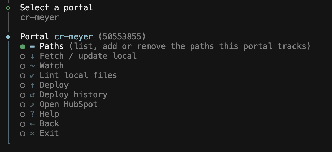
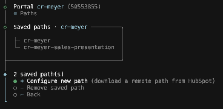
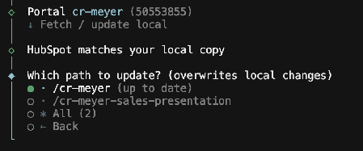
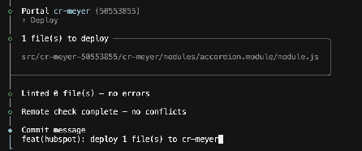

Editing HubSpot's Design Manager directly is risky. Skipping it entirely is slow.
Changing templates and modules right inside HubSpot means no history, no review, and no undo if something breaks on a live client site. The safer path — pulling files down, editing locally with real version control — usually means learning Node, Git, and a new CLI tool first. That's the barrier this skill removes: you talk to Claude in plain language, and it runs hsdm for you, correctly, with a hard stop before anything reaches a live portal.
Five things need to be true first
Tell Claude "check my HubSpot setup" and it verifies all of this for you — you don't need to run these yourself. They're listed here so you know what "ready" looks like.
- Node.js 22+24 LTS recommended if installing fresh
- HubSpot CLI 8.xgives you the official
hscommands + login - Gittracks every fetch and deploy as a local commit
- Portal accesspermission to the account and its Design Manager
Nothing reaches a live portal without you saying yes — by name
Before Deploy, before Watch, and before any Overwrite during a conflict, Claude stops and asks a direct question naming the exact client and account ID and what's about to change. It waits for an explicit yes. Not a vibe, not "sure go ahead" said five minutes ago — an answer to that specific question, every time.
What actually happens, step by step
These are the real hsdm screens. Claude reads them and tells you your options in plain language — you're seeing them here so nothing feels unfamiliar the first time.
Say what you want
No command syntax required. Tell Claude the outcome, and it maps it to the right hsdm flow.
claude checking hsdm · portal cleveland-brothers (43414393) · running Fetch…
Also works for: "I need to edit a module for [client]", "what portal am I on", "send my changes live", "stop watching."
Pick the right portal — by name and ID
HubSpot accounts can have near-identical names across clients. Claude always confirms both the account name and the account ID before doing anything — it won't rely on name alone.
One menu, six things you can do
Once a portal's selected, this is the whole toolset: configure Paths, Fetch, Watch, Lint, Deploy, or check Deploy history. Claude picks the right one from what you asked for — you never have to read this menu yourself.

Choose what you're working on
"Paths" are the specific Design Manager folders tracked locally. Claude can add a new one (browsing HubSpot's folders for you) or work with one already saved — either way, it tells you what it's about to fetch before pulling anything down.

Fetch: pull the latest before you touch anything
Read-only against HubSpot, so it's safe to run often. If HubSpot's copy has changed, Claude tells you and asks whether to grab only what changed or do a full re-download. If you have uncommitted local edits, the fetch is blocked automatically — that's hsdm protecting your work, not a bug.

Watch: continuous sync — the highest-risk mode
Watch uploads every saved change to the live portal automatically, for as long as it runs. Claude will confirm the exact portal before starting, and will check in if a session runs long. When you're done, it'll suggest a Deploy so a clean local commit captures what went live.
Deploy: review, then send it live
Claude tells you exactly which files are about to upload, HubSpot's own lint runs first, and it diffs against the last synced state. Any conflict is Skip, Overwrite, or Cancel — one at a time, and every Overwrite gets its own confirmation. A local commit is written the moment the upload succeeds.

Talk to it like this
| You say | Claude does |
|---|---|
| "Set up my HubSpot workspace" | Checks prerequisites, installs hsdm if needed, runs hsdm init |
| "Is my HubSpot connection working?" | Runs the version and account checks, reports what's missing in plain language |
| "Get the latest files for [client]" | Confirms the portal, runs Fetch |
| "I want to start editing [module/template]" | Confirms or adds the Path, fetches it first |
| "Keep syncing while I work" | Confirms the portal by name and ID, then starts Watch |
| "Send my changes to the client's site" | Confirms the portal and files, walks any conflicts one at a time, then Deploys |
| "What portal am I on?" | Reports the current selection — no action taken |
What's safe to touch
| Path | What it is |
|---|---|
src/{account}-{id}/ | The actual CMS files — this is where editing happens |
paths-config.json | Shared, tracked in Git — hsdm manages it, don't hand-edit |
.hsaccount | Local-only — last selected portal. Never edit or delete |
db/ | Local-only fetch/deploy history and sync state. Never edit or delete |
If something feels off
Ready when you are
Open a Claude Code session in your HubSpot workspace and just ask for what you need — the skill loads automatically.